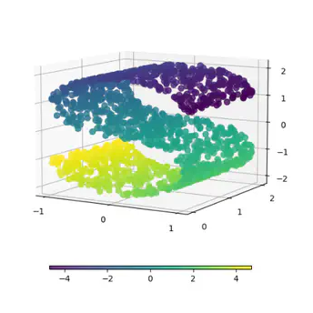

I'm Isaac Saxonov
I'm a 19 year old freshman at Dartmouth College interested in computer science and math.
Current Research

Applying Manifold Learning Techniques to Design Recurrent Architectures for Low Dimension Classification
Research Assistant at LISP Lab, Dartmouth College
Under Prof. Peter Chin
These are some of my projects:
HanziHelper
: an OCR-based Chinese vocabulary flashcard generator that converts images of vocabulary tables into Quizlet flashcards.
StrideScan
: a computer vision based program that analyzes a video of someone sprinting and gives feedback to their form.
BayRise
: I led a nonprofit dedicated to bringing educational enrichment programs to kids in the Bay Area.
Pigeonholed
: a blog where I write about things.
ThemeTracker
: a web app that allows users to track sets of words across any work in the public domain.
Swerve
: a geometric browser game I developed with Unity.
Daily Quotes
: a discord bot that posts philosophical quotes in its servers twice a day.
GradeCalculated
: a site that allows students to calculate their GPA and final grades, as well as generate high level vocabulary words
Old website
: this is my old high school website that demonstrates more of what I did in high school.
Relevant College Coursework:
Dartmouth (GPA: 4.0):
COSC 50: Software Design and Implementation
COSC 69.18: HackLab: Binary Program Analysis for Software Attacks and Defenses
COSC 58: Operating Systems
HUM 1: Global Humanities
CHIN 4: Advanced Beginning Chinese
CHIN 22: Intermediate Modern Chinese
ENGL 07.04: Literature of the Machine
Show more courses...
UC Berkeley (GPA: 3.94):
CS 70: Discrete Mathematics and Probability Theory
CS 61B: Data Structures and Algorithms
CS 61C: Computer Architecture
Math 53: Multivariable Calculus
MCELLBI 64: Introduction to Neuroscience
ASTRON 7A: Introduction to Astrophysics
PHILOS 25A: Ancient Philosophy
Show more courses...